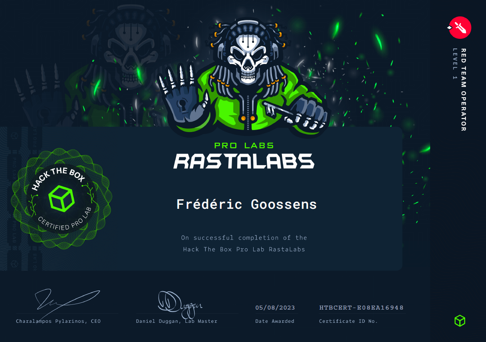

#
Introduction
Embarking on my internship at Davinsi, little did I know that it would lead me to an extraordinary opportunity—completing RastaLabs. This immersive experience proved to be a turning point in my professional development, as it introduced me to a world of new concepts, challenges, and collaboration. In this blog post, I am excited to share the highlights of my journey, the valuable lessons learned, and the vibrant community I discovered along the way.
A Unique Learning Opportunity
RastaLabs presented me with a truly unique learning opportunity. As a newcomer, I was exposed to many novel techniques and ideas that pushed the boundaries of my knowledge. From evading Windows Defender and obfuscating payloads to exploring GPO abuse, LAPS, DPAPI, decrypting files, local privilege escalation, and pivoting networks, each step of the lab unfolded a new layer of red teaming expertise. These topics opened my eyes to the intricate workings of offensive security and expanded my skill set significantly.
The Power of Practical Application
During RastaLabs, I took my learning further by creating proof-of-concept (POC) scripts and payloads. For instance, I developed a reverse shell in PowerShell and a custom AMSI bypass (I changed some variables and encoded certain parts). As of now, it is undetectable by the latest version of Windows Defender. Additionally, collaborating with a fellow participant, we crafted a POC of a reverse shell using Python web servers and custom headers. These hands-on experiences allowed me to solidify my understanding and apply my knowledge in real-world scenarios.
The Global Community
One of the most rewarding aspects of the RastaLabs experience was the vibrant community I became a part of. Through their Discord server, I interacted with like-minded individuals worldwide. This diverse network consisted of beginners and seasoned professionals, all driven by a shared passion for cybersecurity. Inspired by this community, I took the initiative to create my own community, which is active daily. It has become a platform where individuals, regardless of their experience level, can collaborate on projects, seek assistance, and foster meaningful connections.
Reflection
Completing RastaLabs was an unparalleled adventure that accelerated my learning at a remarkable pace. The lab introduced me to cutting-edge techniques and challenged me to grasp new concepts swiftly. It was a dynamic and immersive experience that deepened my understanding of cybersecurity and propelled my growth in the field. Additionally, the global community I became a part of added an invaluable collaborative element to my journey. I am genuinely grateful for the knowledge gained, the connections made, and the exciting future ahead as I continue to explore the ever-evolving landscape of cybersecurity.